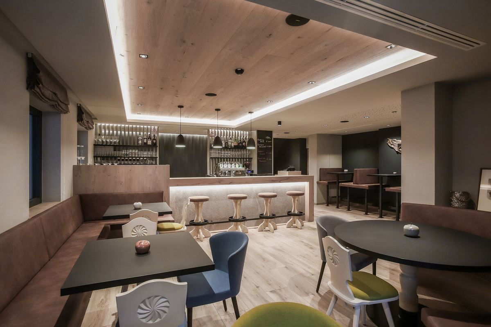

Familie Kröss · seit 1959
Treffpunkt im Sarntal
Die „Sonne“ ist Dorfgasthaus mit Restaurant und Bar – und zugleich Hotel mit 23 Zimmern und Wellnessbereich. Seit 1959 kommen Urlauber, Erholungssuchende und Einheimische aus dem Sarntal gleichermaßen zu uns. Wir führen das Haus in dritter Generation: für Genießer, Natur- und Sportfans, Wanderer und Bergbegeisterte.
„Wir freuen uns auf Sie.“
